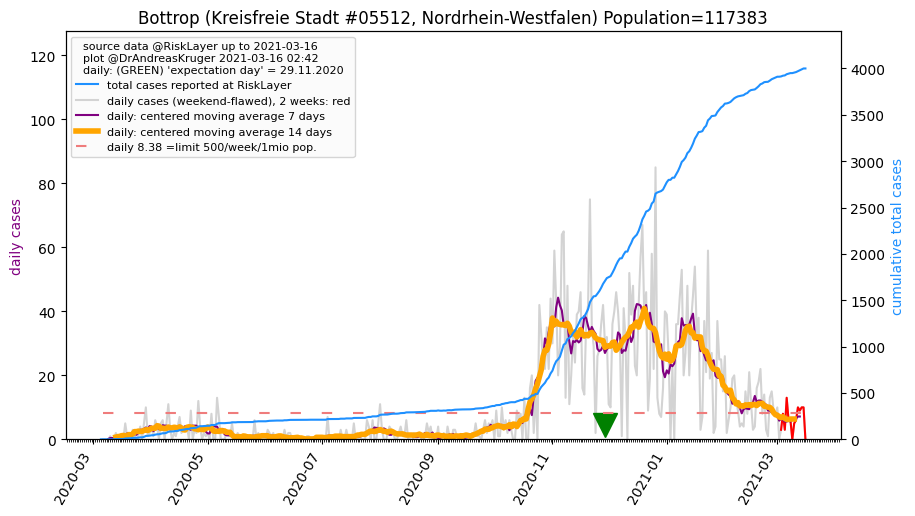
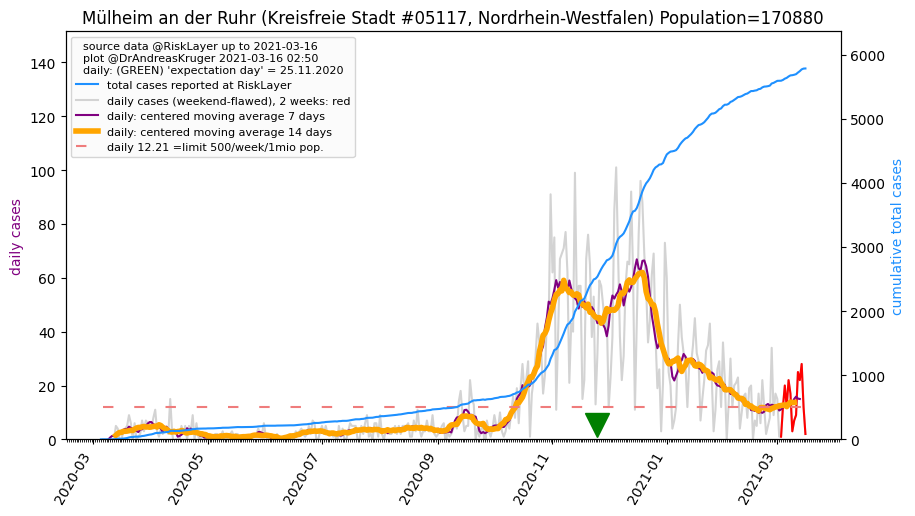
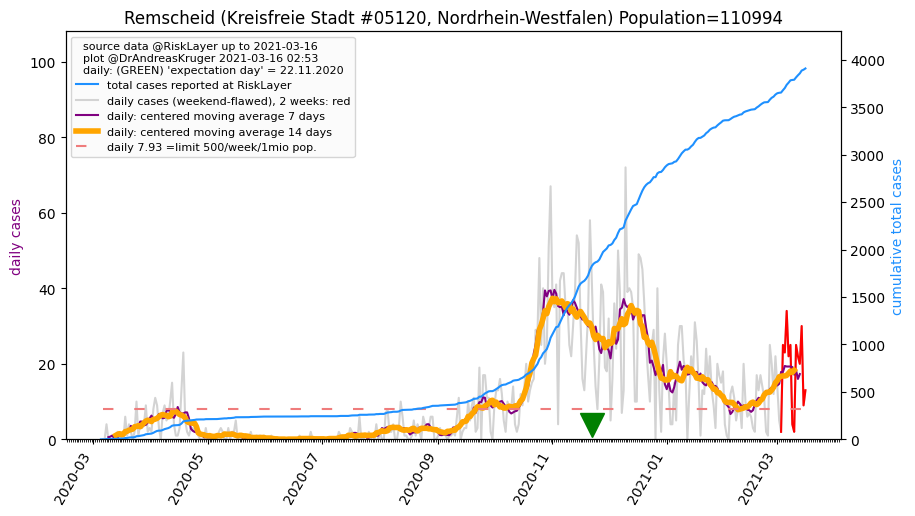
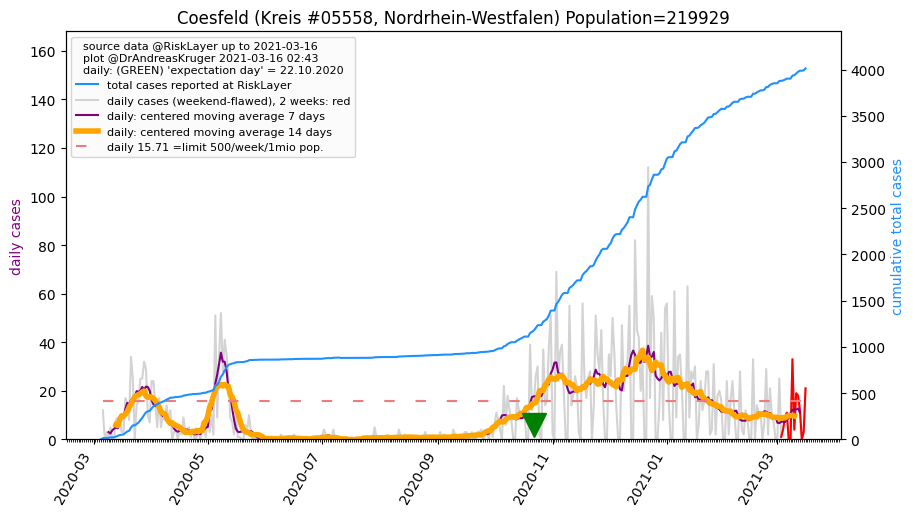
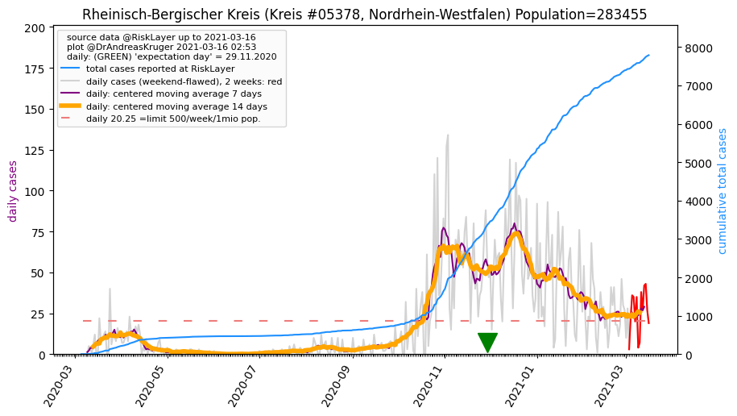
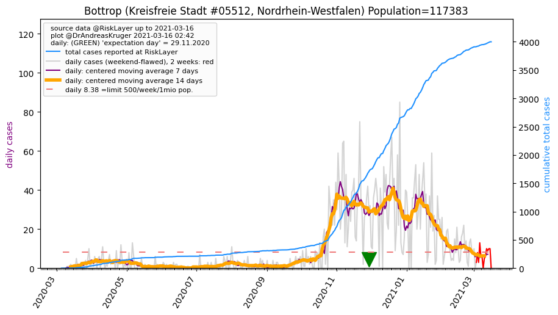
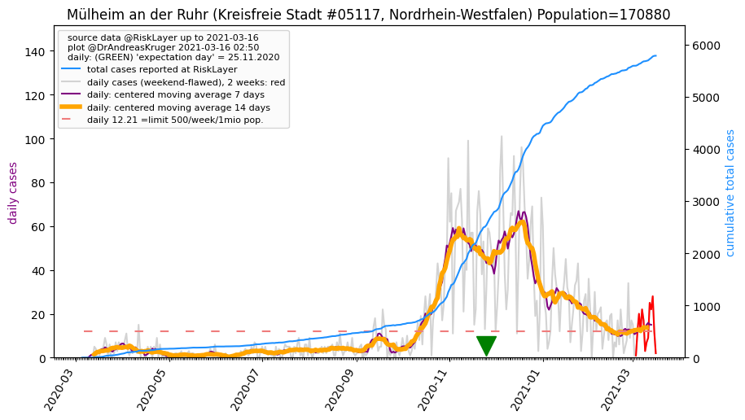
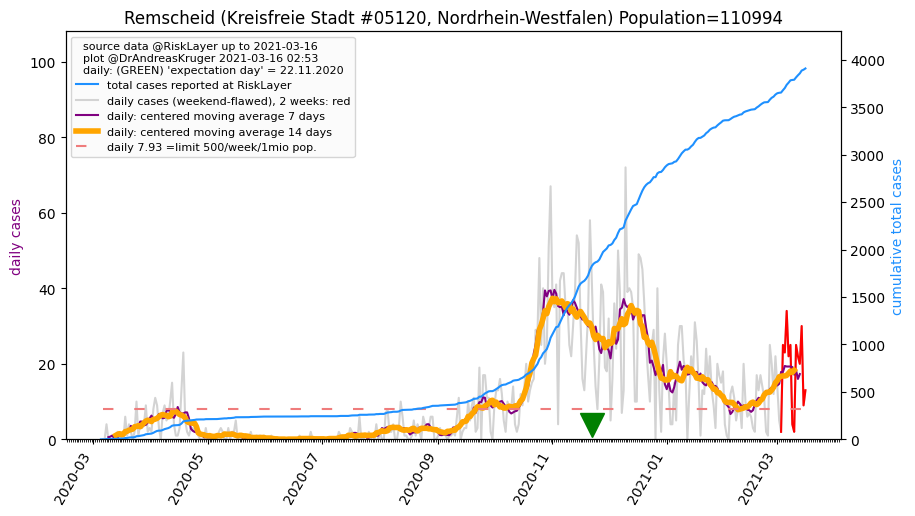
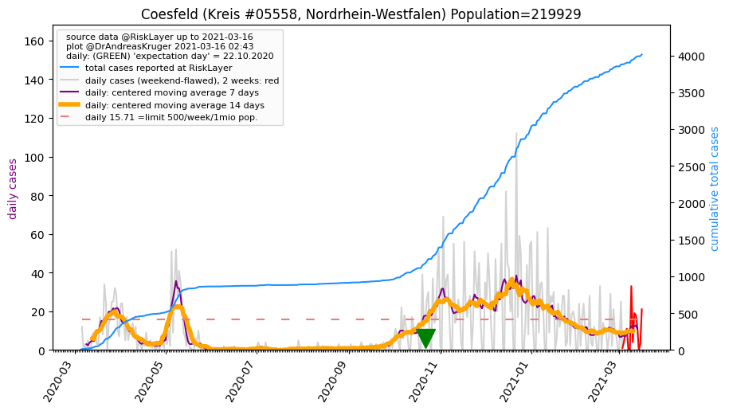
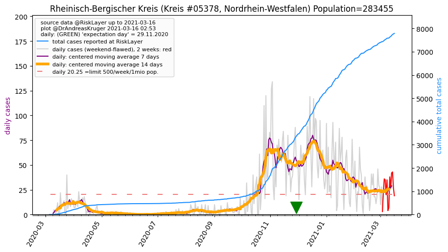

")
")
")
")
")
")
")
")

")

")
")
")

")
")
")
")

")
")
")
")

| Bochum_KS (0.0 km) |
Herne_KS (7.6 km) |
Gelsenkirchen_KS (14.2 km) |
Essen_KS (15.0 km) |
Ennepe-Ruhr-Kreis_KR (15.3 km) |
| Dortmund_KS (18.1 km) |
Recklinghausen_KR (23.0 km) |
Hagen_KS (23.3 km) |
Bottrop_KS (24.0 km)  |
Wuppertal_KS (24.7 km) |
| Mülheim an der Ruhr_KS (24.9 km)  |
Oberhausen_KS (26.7 km) |
Mettmann_KR (29.6 km) |
Unna_KR (31.0 km) |
Remscheid_KS (32.0 km)  |
| Duisburg_KS (34.2 km) |
Solingen_KS (36.0 km) |
Düsseldorf_KS (38.9 km) |
Märkischer Kreis_KR (41.1 km) |
Coesfeld_KR (45.2 km)  |
| Wesel_KR (45.6 km) |
Hamm_KS (46.8 km) |
Krefeld_KS (47.0 km) |
Leverkusen_KS (48.6 km) |
Rheinisch-Bergischer Kreis_KR (49.8 km)  |
All plots are regenerated with new data every night. Beware this temporary hotspot is an experimental page - it might get removed, so please do not link to it. Instead link to project http://tiny.cc/cov19de.